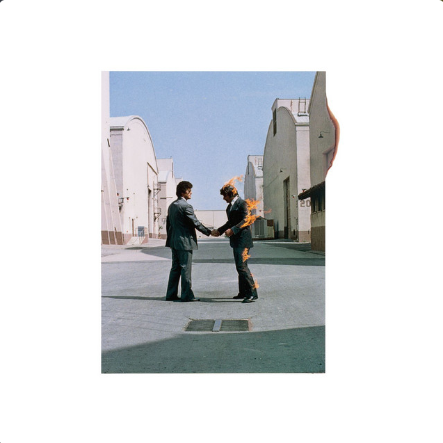

Wish You Were Here
Song by Pink Floyd
So, so you think you can tell
Heaven from Hell,
Blue skies from pain.
Can you tell a green field
From a cold steel rail?
A smile from a veil?
Do you think you can tell?
Did they get you to trade
Your heroes for ghosts?
Hot ashes for trees?
Hot air for a cool breeze?
Cold comfort for change?
Did you exchange
A walk on part in the war,
For a lead role in a cage?
How I wish, how I wish you were here.
We're just two lost souls
Swimming in a fish bowl,
Year after year,
Running over the same old ground.
What have we found
The same old fears.
Wish you were here.